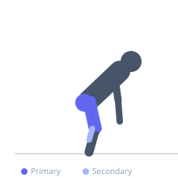
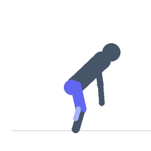

Exercise guide / Heavy Sled Backward Drag
Heavy Sled Backward Drag
The backward sled drag involves attaching a harness or straps to a loaded sled and walking backward, pulling the sled along behind. The backward walking motion activates the hamstrings and quadriceps in an unusual anti-gravity pattern and places high demand on the knee extensors throughout the entire range, making it an excellent rehabilitation tool for knee health and an effective conditioning tool for the posterior chain. Unlike forward sled pushing, the backward drag emphasises the hamstrings and gluteus maximus and is particularly effective for VMO (vastus medialis oblique) strengthening.
Primary muscles
biceps femoris long head
gluteus maximus
vastus medialis
Secondary muscles
vastus lateralis
gastrocnemius medial
gluteus medius
Stabilizers
erector spinae
transverse abdominis
Equipment


Starting position
- Attach a pulling harness around the waist or hold the strap handles. Stand facing away from the loaded sled with the straps taut. Take an athletic stance.
Setup
- Attach the sled harness securely. Ensure there is slack-free connection between the harness and the sled. The sled can also be dragged holding straps in both hands at hip height.
Steps
- Step 1: Face away from the sled with straps taut. Stand tall with a slight forward lean at the hips.
- Step 2: Drive the rear foot into the ground and step backward, taking a full backward step.
- Step 3: Continue walking backward with alternating steps, keeping tension in the straps throughout. Do not allow the straps to go slack.
- Step 4: Maintain an upright posture and consistent pull tension. Look over the shoulder periodically to check the path.
- Step 5: At the end of the distance, slow and stop. Turn and re-position for the next set.
Coaching cues
- Keep the straps taut at all times
- Take big backward strides
- Squeeze the glutes and hamstrings with every step
Breathing
- Breathe regularly throughout the drag. Short, rhythmic breathing with each backward step.
Range of motion
- Walk 20–40 metres per set. Full stride length backward. Continuous strap tension.
Tempo
- Rehabilitation/prehab: light load, 30–40m × 4–6 sets with 60 seconds rest. Conditioning: moderate load, 20m × 6–8 sets with 60–90 seconds rest.
Common mistakes
- Allowing the straps to go slack between steps — this loses the continuous tension that makes the exercise effective
- Walking with very short shuffle steps — full backward strides produce more hip and hamstring demand
- Looking down rather than forward/backward, which disrupts posture and balance
Safety
- Glance over the shoulder regularly to check for obstacles in the backward path
- Use this exercise on a clear, flat surface
Training
- endurance: 3–8 reps
- endurance: 4–8 sets
- Rest: {'endurance': 60}